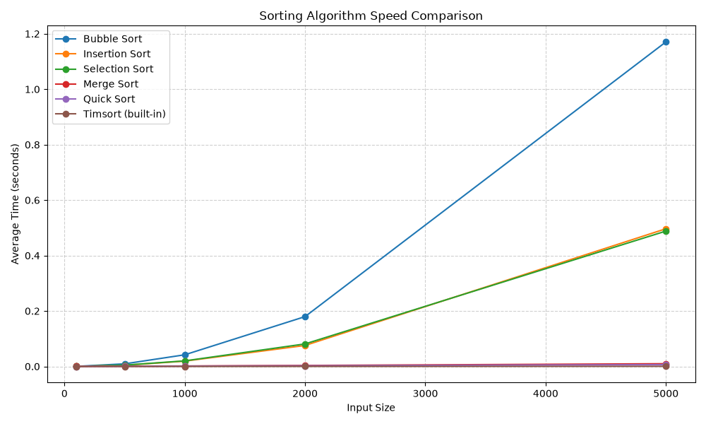

주제: 여러 정렬 알고리즘의 속도를 비교하고 그래프로 그려 줘
결과: 성공 · 시도 1번 · 모델 nvidia/nemotron-3.5-super-vl-120b-a12b
무엇을 했는지
여러 정렬 알고리즘의 속도를 비교하고 그 결과를 그래프로 그렸습니다. 비교 대상은 버블 정렬, 삽입 정렬, 선택 정렬, 병합 정렬, 퀵 정렬, 파이썬 내장 팀소트입니다. 데이터 개수는 100개에서 5000개까지 늘려가며 측정했고, 각 경우에 세 번 반복하여 평균 시간을 구했습니다. 측정 결과는 화면에 출력했고, 그래프는 out/sorting_comparison.png 파일로 저장했습니다.
결과
데이터 개수가 많아질수록 버블 정렬, 삽입 정렬, 선택 정렬 같은 간단한 알고리즘은 속도가 급격히 느려졌습니다. 5000개 데이터 기준 버블 정렬은 약 1.17초, 삽입 정렬은 약 0.50초, 선택 정렬은 약 0.49초가 걸렸습니다. 반면 병합 정렬은 약 0.01초, 퀵 정렬은 약 0.007초로 훨씬 빨랐습니다. 파이썬 내장 팀소트가 가장 빨라서 5000개 데이터 기준 약 0.0005초 만에 정리를 마쳤습니다.
알게 된 점
데이터 양이 많을 때 제곱 시간에 비례하는 알고리즘은 실용적이지 않다는 것을 확인했습니다. 병합 정렬과 퀵 정렬처럼 데이터 개수에 로그 곱 선형 시간에 비례하는 알고리즘은 대용량 데이터에서도 효율적으로 작동합니다. 실제 프로그램에서는 파이썬 내장 sorted 함수처럼 최적화된 팀소트를 쓰는 것이 가장 빠르고 안전합니다. 퀵 정렬은 평균 속도는 빠르지만 구현 방식에 따라 최악의 경우 성능이 떨어질 수 있다는 점도 주의해야 합니다.
다음에 해 볼 것
더 많은 데이터 개수, 예를 들어 1만 개나 10만 개 이상으로 테스트해 보고 싶습니다. 이미 정렬된 데이터, 역순 데이터, 중복 값이 많은 데이터처럼 입력 데이터의 모양에 따른 성능 차이도 측정해 보면 좋겠습니다. 메모리 사용량까지 함께 비교하면 더 종합적인 성능 분석이 가능할 것 같습니다.

Algorithm Size Avg Time (sec) Avg Time (ms) ----------------------------------------------------------------------- Bubble Sort 100 0.000319 0.319 Insertion Sort 100 0.000130 0.130 Selection Sort 100 0.000149 0.149 Merge Sort 100 0.000139 0.139 Quick Sort 100 0.000084 0.084 Timsort (built-in) 100 0.000005 0.005 Bubble Sort 500 0.009344 9.344 Insertion Sort 500 0.004122 4.122 Selection Sort 500 0.004812 4.812 Merge Sort 500 0.000765 0.765 Quick Sort 500 0.000567 0.567 Timsort (built-in) 500 0.000026 0.026 Bubble Sort 1000 0.041992 41.992 Insertion Sort 1000 0.019133 19.133 Selection Sort 1000 0.020033 20.033 Merge Sort 1000 0.001613 1.613 Quick Sort 1000 0.001122 1.122 Timsort (built-in) 1000 0.000064 0.064 Bubble Sort 2000 0.179716 179.716 Insertion Sort 2000 0.075671 75.671 Selection Sort 2000 0.081223 81.223 Merge Sort 2000 0.003513 3.513 Quick Sort 2000 0.002416 2.416 Timsort (built-in) 2000 0.000162 0.162 Bubble Sort 5000 1.170656 1170.656 Insertion Sort 5000 0.496666 496.666 Selection Sort 5000 0.488224 488.224 Merge Sort 5000 0.009773 9.773 Quick Sort 5000 0.006591 6.591 Timsort (built-in) 5000 0.000484 0.484 Graph saved to: out/sorting_comparison.png
import os
import time
import random
import matplotlib
matplotlib.use('Agg')
import matplotlib.pyplot as plt
def bubble_sort(arr):
a = arr[:]
n = len(a)
for i in range(n):
swapped = False
for j in range(0, n - i - 1):
if a[j] > a[j + 1]:
a[j], a[j + 1] = a[j + 1], a[j]
swapped = True
if not swapped:
break
return a
def insertion_sort(arr):
a = arr[:]
for i in range(1, len(a)):
key = a[i]
j = i - 1
while j >= 0 and a[j] > key:
a[j + 1] = a[j]
j -= 1
a[j + 1] = key
return a
def selection_sort(arr):
a = arr[:]
for i in range(len(a)):
min_idx = i
for j in range(i + 1, len(a)):
if a[j] < a[min_idx]:
min_idx = j
a[i], a[min_idx] = a[min_idx], a[i]
return a
def merge_sort(arr):
if len(arr) <= 1:
return arr[:]
mid = len(arr) // 2
left = merge_sort(arr[:mid])
right = merge_sort(arr[mid:])
return _merge(left, right)
def _merge(left, right):
result = []
i = j = 0
while i < len(left) and j < len(right):
if left[i] <= right[j]:
result.append(left[i])
i += 1
else:
result.append(right[j])
j += 1
result.extend(left[i:])
result.extend(right[j:])
return result
def quick_sort(arr):
if len(arr) <= 1:
return arr[:]
pivot = arr[len(arr) // 2]
left = [x for x in arr if x < pivot]
middle = [x for x in arr if x == pivot]
right = [x for x in arr if x > pivot]
return quick_sort(left) + middle + quick_sort(right)
def timsort(arr):
return sorted(arr)
ALGORITHMS = {
"Bubble Sort": bubble_sort,
"Insertion Sort": insertion_sort,
"Selection Sort": selection_sort,
"Merge Sort": merge_sort,
"Quick Sort": quick_sort,
"Timsort (built-in)": timsort,
}
SIZES = [100, 500, 1000, 2000, 5000]
TRIALS = 3
def benchmark():
results = {name: [] for name in ALGORITHMS}
header = f"{'Algorithm':<26} {'Size':<8} {'Avg Time (sec)':<18} {'Avg Time (ms)':<16}"
print(header)
print("-" * len(header))
for size in SIZES:
base = [random.randint(0, 100000) for _ in range(size)]
for name, func in ALGORITHMS.items():
elapsed_list = []
for _ in range(TRIALS):
data = base[:]
start = time.perf_counter()
func(data)
end = time.perf_counter()
elapsed_list.append(end - start)
avg_sec = sum(elapsed_list) / len(elapsed_list)
results[name].append(avg_sec)
print(f"{name:<26} {size:<8} {avg_sec:<18.6f} {avg_sec * 1000:<16.3f}")
return results, SIZES
def plot_results(results, sizes):
os.makedirs("out", exist_ok=True)
plt.figure(figsize=(10, 6))
for name, times in results.items():
plt.plot(sizes, times, marker="o", label=name)
plt.xlabel("Input Size")
plt.ylabel("Average Time (seconds)")
plt.title("Sorting Algorithm Speed Comparison")
plt.legend()
plt.grid(True, linestyle="--", alpha=0.6)
plt.tight_layout()
plt.savefig("out/sorting_comparison.png")
print("\nGraph saved to: out/sorting_comparison.png")
if __name__ == "__main__":
random.seed(42)
results, sizes = benchmark()
plot_results(results, sizes)